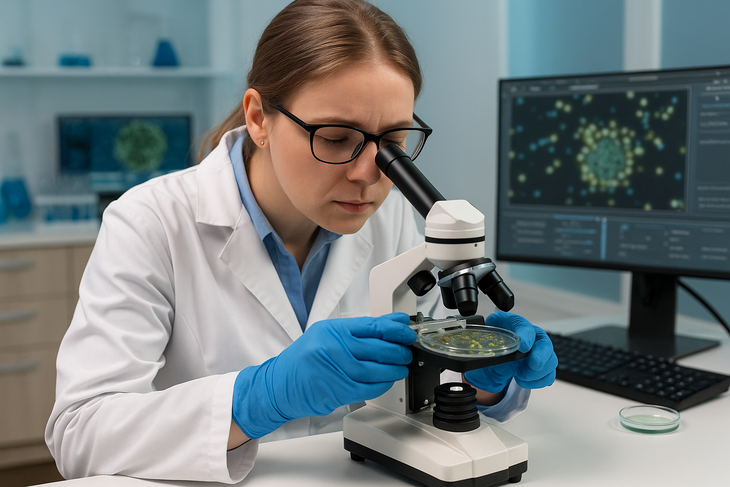

Đăng ngày: 23/05/2025
Vi khuẩn này có thể gây các bệnh nghiêm trọng ở người, bao gồm các vấn đề về dạ dày, nhiễm trùng vết thương và nhiễm trùng tai... Đáng chú ý, chúng có thể chia sẻ gene.
Các nhà nghiên cứu Israel đã phát hiện chủng vi khuẩn Vibrio nguy hiểm, có khả năng kháng kháng sinh ở Biển Đỏ và Địa Trung Hải, gây ra những lo ngại sâu sắc về sức khỏe cộng đồng tại những khu vực này.
Theo thông báo của Đại học Tel Aviv (TAU), vi khuẩn Vibrio có thể gây ra các bệnh nghiêm trọng ở người, bao gồm các vấn đề về dạ dày, nhiễm trùng vết thương và nhiễm trùng tai. Vi khuẩn này cũng gây hại cho các loài động vật biển như san hô và động vật có vỏ.
Đáng chú ý, vi khuẩn Vibrio có thể chia sẻ gene, nghĩa là khi một chủng trở nên có hại, nó có thể biến các chủng khác thành mối đe dọa tương tự. Xu hướng gia tăng nhiệt độ đại dương đang trở thành chất xúc tác, khiến các chủng vi khuẩn Vibrio lây lan đến những khu vực mới và lây nhiễm cho nhiều người hơn.
Trong nghiên cứu được công bố trên tạp chí mSphere, các nhà khoa học của TAU đã phân tích bộ gene của 23 mẫu vi khuẩn Vibrio thu thập từ vùng nước ven biển hai thành phố Tel Aviv và Eilat (cùng của Israel).
Kết quả cho thấy một loạt độc tố, hệ thống tiết dịch và các yếu tố di truyền di động giúp vi khuẩn Vibrio lây lan các đặc tính tăng cường khả năng sống sót và độc lực của chúng.
Nghiên cứu còn chỉ ra rằng ít nhất 10 chủng vi khuẩn đã làm chết tế bào miễn dịch, và ít nhất 12 chủng có thể gây độc cho các chủng Vibrio cạnh tranh khác. Khi được thử nghiệm với các loại kháng sinh thường dùng để điều trị nhiễm trùng Vibrio, nhiều mẫu đã cho thấy khả năng kháng thuốc mạnh, đặc biệt là với azithromycin - một loại kháng sinh phổ biến.
Một chủng vi khuẩn Vibrio được phát hiện ở Biển Đỏ có khả năng sản xuất một loại độc tố gây chết tôm, gây thiệt hại hàng tỉ USD cho các trang trại nuôi tôm trên toàn thế giới.
Theo nhóm nghiên cứu, những kết quả nêu trên nhấn mạnh nguy cơ gây bệnh tiềm ẩn của vi khuẩn Vibrio trong vùng nước ven biển Israel, qua đó nêu bật nhu cầu cấp thiết về việc giám sát môi trường liên tục để theo dõi và quản lý các mối đe dọa mới nổi.
Tác giả: Vũ Trúc Lam